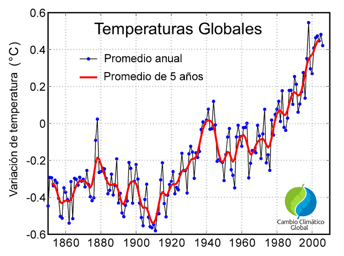
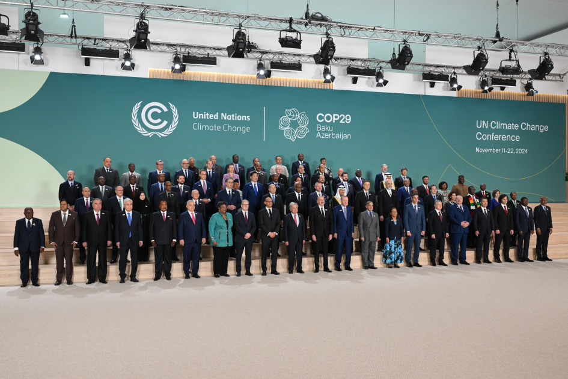
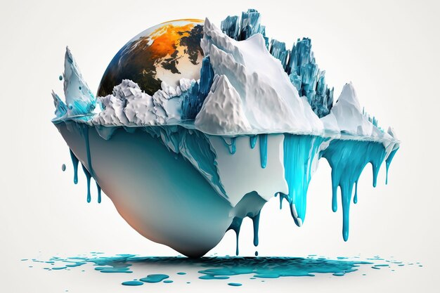
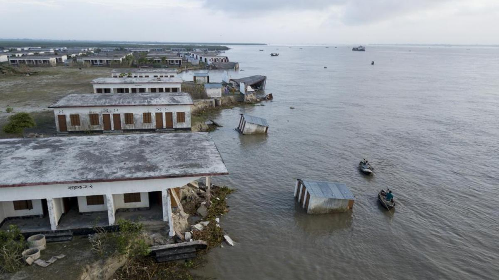

El cambio climático ha sido un tema de preocupación desde finales del siglo XX, cuando los científicos comenzaron a observar un aumento en las temperaturas globales debido a las emisiones de gases de efecto invernadero.

En las últimas décadas, el calentamiento global ha acelerado la necesidad de acciones urgentes para mitigar sus efectos.

Impactos del Cambio Climático
El cambio climático afecta a los ecosistemas, las economías y las comunidades de todo el mundo. Desde el derretimiento de los glaciares hasta eventos climáticos extremos, los impactos son visibles.

Las comunidades costeras enfrentan el aumento del nivel del mar, mientras que las regiones agrícolas sufren sequías prolongadas.

Soluciones al Cambio Climático
La mitigación del cambio climático requiere acciones colectivas, como la transición a energías renovables, la reforestación y la reducción de emisiones.
La educación y la cooperación internacional son clave para construir un futuro sostenible.